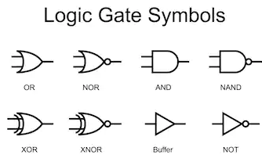
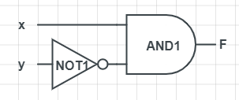
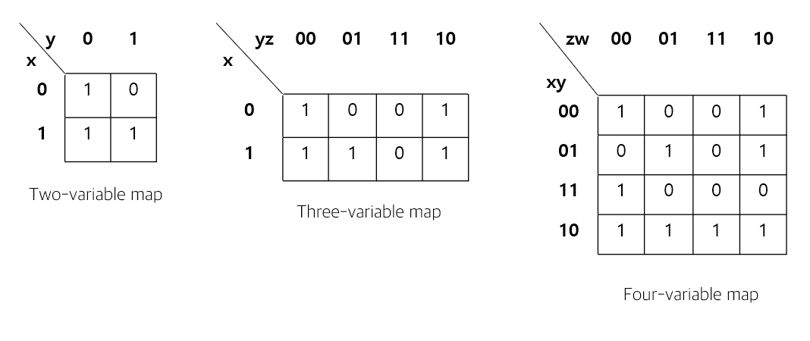
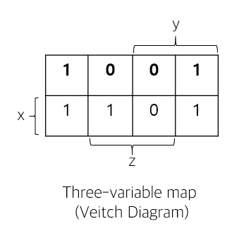
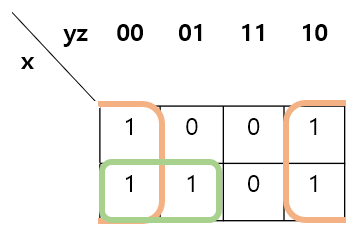

디지털 논리회로
Table of contents
논리 게이트
게이트란 논리 회로로서 입력 논리에 따라 0, 1의 신호를 만드는 하드웨어다.
AND, OR, Inverter, Buffer, NAND, NOR, XOR, XNOR 등등의 회로가 존재한다.

부울 대수
부울 대수란
부울 대수란 이진 변수와 논리 동작을 취급하는 대수이다.
가령 F = x + y’라는 함수가 주어졌을 때, 부울 대수에서는 다음과 같은 진리표와 논리도를 구성할 수 있다.
진리표(Truth table)
| x | y | F |
|---|---|---|
| 0 | 0 | 1 |
| 0 | 1 | 0 |
| 1 | 0 | 1 |
| 1 | 1 | 1 |
논리도(Logic diagram)

부울 대수의 특이사항
부울 대수의 일반적인 대수와 상이한 기본 관계에는 두가지가 있다.
덧셈, 뺄셈의 분배법칙 성립
x + yz = (x + y)(x + z)
드모르간 정리(De Morgan) 성립
(x + y)’ = x’y’
(xy)’ = x’ + y’
부울 함수의 간소화
논리 표현식은 부울 대수를 사용하여 간단히 만들수 있다.
논리 표현식을 간소화하는 방식에는 크게 카르노맵(Karnaugh map)방식과 퀸-맥클러스키(Quine-McCluskey algorithm)방식이 있다.
카르노맵과 퀸-맥클러스키방법의 용법
카르노맵 방법은 표와 그림을 이용하기 때문에 4~5변수 이하의 함수를 간략화하는데 효과적인 방법이고,
퀸-맥클러스키 방법은 4~5변수 이상의 함수도 효율적으로 논리 최적화할 수 있다.
단, 논리 최적화 문제는 NP-완전하므로 변수의 개수가 늘수록 실행 시간은 지수적으로 늘게된다.
변수의 개수가 연산이 힘들만큼 클 경우 경우 발견법(Heuristic)으로 풀 수 밖에 없다.
카르노 맵을 이용한 간소화
민텀(minterm)
진리표에서 변수의 각 조합을 Σ로 표현한 것을 민텀(minterm)이라고 한다.
위에서의 부울함수 F = x + y’의 민텀을 구해보자.
| x | y | F | Index |
|---|---|---|---|
| 0 | 0 | 1 | 0 |
| 0 | 1 | 0 | 1 |
| 1 | 0 | 1 | 2 |
| 1 | 1 | 1 | 3 |
F가 1이 되는 경우는 0번째, 2번째, 3번째임을 알 수 있다.(Index가 0부터 시작함을 유의하자)
따라서 0, 2, 3번째의 조합인 민텀은 F(x, y) = Σ(0, 2, 3) = x’y’ + xy’ + xy 이 된다.
여기서 x’y’ + xy’ + xy와 x + y’가 F로 같으므로, 전자의 민텀이 최적화의 여지가 있다는 것을 알 수 있다.
카르노맵 그리기
카르노맵을 그리는 법은 변수의 개수에 따라 다음과 같다.

Five-variable도 가능하지만 잘 쓰이지 않는다.Three-variable map부터 두 개의 변수를 한줄에 나타낼 때 Gray Code처럼 00 01 11 10과 같이 적어야함을 유의해야 한다. 이유는 추후에 서술한다.
첫번째 Two-varible map이 x’y’ + xy’ + xy의 카르노맵에 해당한다.
또한 카르노맵 이외에 Veitch 다이어그램으로도 표현가능하다.

위의 카르노맵에서 변수가 1에 해당하는 부분에만 변수 표기를 해두는 방식이다.
최적화 방법은 카르노맵과 동일하다.
최적화 하기
카르노맵에서 해야할 것은 1을 사각형으로 묶는 작업이다.
위의 Three-variable map에서의 맵을 이용한 예시를 먼저 해석하면서 생각하자.

위에서 주황 사각형의 경우 z가 0인 경우이고, 초록 사각형의 경우 x가 1이면서 y가 0인 경우이다.
두 사각형의 식을 합한다면 F = z’ + xy’, 2개의 항으로 표현할 수 있게 된다. 민텀의 경우보다 3개가 줄어든 것이다!
민텀은 1 한 개마다 항을 표시해주는 방식이라면, 카르노맵은 여러 개의 1을 묶어 하나의 항으로 표기하여 최적화하는 방식이다.
이때, 아무 1이나 묶는다고 최적화가 될리가 없다. 공통적인 항(ex. x가 1인 경우)을 가진 1을 묶어야 항이 자연스레 적어지게 될 것이다.
공통적인 항을 인접하게 두기 위해 변수를 Gray Code처럼 배치한 것이고, 이에 따라 사각형을 치게되면 자연스레 공통적인 항이 묶이게 된다.
이를 응용하면 제일 왼쪽과 제일 오른쪽은 이어져있진 않지만 공통적인 항이 존재하므로 연결되어있다고 간주하고 묶을수도 있다. 상하는 물론이고, 꼭짓점들도 곰곰히 생각해보면 마찬가지다.
또한 사각형 내부의 1의 개수는 1, 2, 4.. 와 같은 승수가 되도록 묶어야하는데, 한 사각형이 한 개의 항을 표현해야 한다는 것을 생각하면 2의 승수가 아닐 경우 여러 개의 항으로 표현할 수 밖에 없기 때문이다.
위의 내용으로 보아, 사각형이 최대한 크고 개수가 적을수록 최적화가 잘 된다는 결론을 도출할 수 있다.
사각형의 조건을 정리하자면 다음과 같다.
- 사각형은 1로만 이루어져야 한다.
- 사각형 내의 1의 갯수는 2의 승수개이여야 한다.
- 상하, 좌우, 꼭짓점들은 이어져있다고 간주할 수 있다.
- 사각형은 최대한 크고, 적게 그려야 한다.
퀸-맥클러스키 방법을 이용한 최적화
TODO : 일단 책에 없어서 넘어간다
논리합의 논리곱으로의 표현
F(x, y, z, w) = Σ(0, 1, 2, 5, 8, 9, 10)를 간소화한다면
F = B’D’ + B’C’ + A’C’D를 얻게 된다.
이는 논리곱의 논리합(sum of products)이다.
최적화할 때 F의 보수를 얻기 위해 0을 1로 간주하고 1을 0으로 간주한다면
F’ = AB + CD + BD’를 얻게 된다.
드모르간 정리를 사용한다면
F = (A’ + B’)(C’ + D’)(B’ + D)를 얻게 된다.
이는 논리합의 논리곱(product of sums)이다.
두 경우는 회로의 구현에 있어서 차이가 있으므로 유념해야 한다.
Don’t Care 조건
맵의 민텀 구역에는 1이나 0이 들어가지만 민텀과 관계 없이 같은 값을 가지는 함수의 경우가 있다.
이 때 이런 조건을 Don’t care 조건이라고 하며, 맵에서는 X로 집어놓고 간소화 할 때 0또는 1중 유리한 방향으로 생각한다.
회로
회로에는 조합 회로와 순차 회로가 있다.
조합 회로는 현재 입력을 기반으로 출력한다면, 순차 회로는 현재 입력과 현재 상태를 기반으로 출력하는 회로이다.
조합 회로부터는 논리 게이트를 자세히 그리지 않고 사각형으로 퉁쳐서 표현(Block Diagram)하는 것이 가능하다.
조합 회로
반가산기
비트 두 개를 산술적으로 가산하는 조합 회로이다.
반가산기는 x, y 두개의 비트를 입력받고 s(sum), c(carry) 두 개의 비트를 출력한다.
논리 표현식은 다음과 같다.
S = x ⊕ y, C = xy
전가산기
비트 두 개를 산술적으로 가산하되, 아랫 자리의 올림수(carry)까지 고려하는 조합회로이다.
반가산기 2개로 구현가능하다.
논리 표현식은 다음과 같다. (z는 올라오는 캐리이다.)
S = x ⊕ y ⊕ z, C = xy + (x ⊕ y)z
순차회로
작성중..
Latex
\(\begin{aligned} & \phi(x,y) = \phi \left(\sum_{i=1}^n x_ie_i, \sum_{j=1}^n y_je_j \right) = \sum_{i=1}^n \sum_{j=1}^n x_i y_j \phi(e_i, e_j) = \\ & (x_1, \ldots, x_n) \left( \begin{array}{ccc} \phi(e_1, e_1) & \cdots & \phi(e_1, e_n) \\ \vdots & \ddots & \vdots \\ \phi(e_n, e_1) & \cdots & \phi(e_n, e_n) \end{array} \right) \left( \begin{array}{c} y_1 \\ \vdots \\ y_n \end{array} \right) \end{aligned}\)